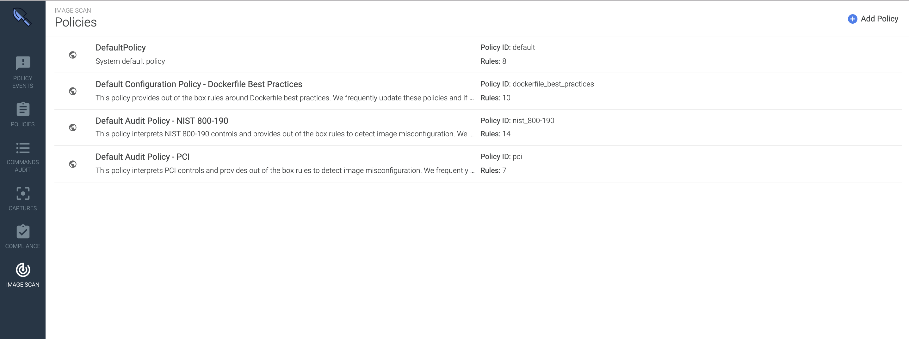
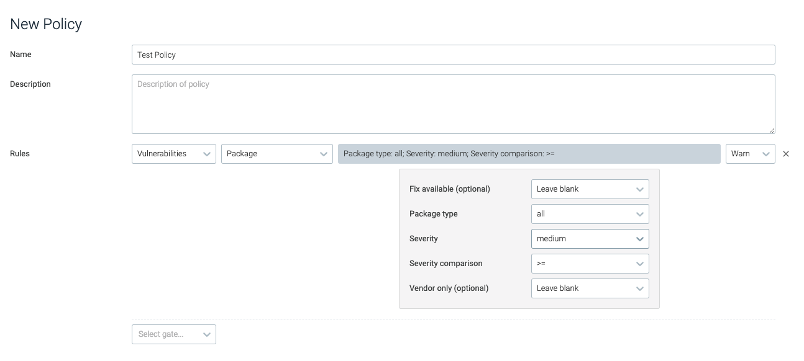

Manage Scanning Policies
Image scanning policies define several scenarios, such as:
The build process may be stopped.
Administrators may be alerted to potential risks within container images.
Each scanning policy is comprised of rules built of gates and triggers. Sysdig includes default policies that can be used to run scans as soon as registry credentials have been configured.
Users can create additional rules or policies from the available Scanning Policy Gates and Triggers.
Preconfigured Policies
Sysdig provides four baseline policies that can be used as-is or as templates on which to build.
|  |
Default Policy
This policy covers the most common image scanning cases, such as:
checking for medium and high vulnerabilities
checking configuration items (e.g., ensuring health checks in an image or disallowing exposed ports)
validating that the vulnerability feed data is up-to-date.
This policy is a basic catch-all that cannot be deleted. If no other policy assignments are made, the Default policy is automatically used.
Tip
You can edit the Default policy and edits will be retained even when you upgrade Sysdig Secure.
Preconfigured Compliance Policies
The three other preconfigured policies deal with compliance rules. To use them, you must add them to the Policy Assignments list.
Warning
If you want to edit a preconfigured compliance policy, create a new policy with matching rules and edit that.
Otherwise, your customizations may be overwritten and lost during Sysdig Secure upgrades.
Configuration Policy - Dockerfile Best Practices
This policy provides out-of-the-box rules around Dockerfile best practices, such as disallowing:
secrets baked in as environment variables
rootuser configurationexposed ports
run instructions that include
.yumupgrades.
Audit Policy - NIST 800-190
This policy maps NIST 800-190 controls to a Sysdig Secure scanning policy, such as disallowing:
non-official node or Ruby packages
addinstructions in a Docker filethe use of base distributions outside of expected values.
Audit Policy - PCI
This policy maps PCI (Payment Card Industry) controls to a Sysdig Secure scanning policy, such as disallowing vulnerabilities or credentials to be included in the image.
Customized Policies
Remember not to edit preconfigured compliance scanning policies directly. Create a matching policy and edit that one.
Create a Policy
From the
Image Scanningmodule, selectScanning Policiesand clickAdd Policy(+).The New Policy page is displayed.

Define a
Nameand an optionalDescriptionfor the new policy.Add a
Rule:Select the
Gateand then theTriggerfrom the drop-down menus.Configure relevant parameters. (Some triggers do not require parameters to be set.)
See Scanning Policy Gates and Triggers for details on each option.
The example below uses the
vulnerabilitiesgate with thepackagetrigger.
Optional: Repeat step 5 to add rules as necessary.
Click
Save.
Edit a Policy
From the
Image Scanningmodule, selectScanning Policies.Select the desired policy from the list.
Edit the policy rules as required, and click
Save Policy.
Delete a Policy
From the
Image Scanningmodule, selectScanning Policies.Select the desired policy from the list.
Click the
Delete(trash can) icon and chooseYesto confirm the change.
Whitelist/Blacklist
You can globally whitelist or blacklist particular images or CVEs, if desired. See Whitelist | Blacklist CVEs and Images. This does not affect the policy evaluation order.
Manage Policy Assignments
Unless you use a very simple, single-policy approach to scanning, you will probably assign particular policies to particular registries, repositories, or tags.
Use the Policy Assignments page to do this.
For example:
To evaluate all images with a “Prod” tag with your Example Prod Image Policy, use the assignment (
registry/repo/tag):*/*/ProdTo evaluate all images from gcr.io with an Example Google Policy, use the assignment (
registry/repo/tag):gcr.io/*/*
Assign a Policy
From the
Image Scanningmodule, selectScanning Policiesand choose +Policy Assignments.The previously defined assignments are listed in priority order.

Click
+Add Policy Assignment.A new entry line appears at the top of the Assignment page. Enter the desired assignment details:
Priority: Priority is the order of evaluation against the assigned policy. Each new assignment is auto-placed at Priority 1. Once a policy assignment is created and saved, you can change its priority order by dragging it into a new position on the list. See also Using Priorities.Registry:Any registry domain (e.g.quay.io). Wildcards are supported; an asterisk * specifies any registry.Repository:Any repository (typically = name of the image). Wildcards are supported; an asterisk * specifies any repository.Tag: Any tag. Wildcards are supported; an asterisk * specifies any tag.Assigned Policy: Name of policy to use for evaluation. Select from the drop-down menu.
Click
Save.Optional: Reorganize the Priority order by clicking the drag handle (the four dots to the left of a line) and dragging the assignment to a different spot on the list.
Using Priorities
When you use more than one scanning policy, the Anchore engine evaluates them in top-down order, starting from Priority 1 in the Policy Assignment list. The first policy assignment rule that matches an input image will be evaluated, and all subsequent rules ignored. Therefore, the priority order is important.
Tip
For example, imagine a list with two defined policy assignments:
Priority 1 Registry = quay.io Repository = sysdig/*
Priority 2 Registry = quay.io Repository = sysdig/myrepo
Since the first rule uses a wild card, the evaluation applies to all repos beginning with sysdig/ and will stop before evaluating sysdig/myrepo.
Reverse the priority order to get the behavior you want.
There is a catch-all entry at the bottom of the Policy Assignment list that cannot be removed. It has the format :
registry = * repository = * tag = * assigned policy = default
(You can change the assigned policy, but other fields cannot be edited.)
The purpose of this row is to ensure that any registries that do not fall under another policy evaluation will at least be evaluated against the system-configured Default policy.